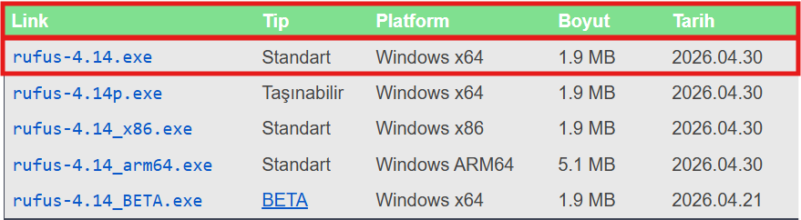

Özgür ve güvenli bir işletim sistemi olan Linux kurulum aşamaları için aşağıdaki aşamaları
izleyin. Çekirdeği Linux
olan yüzlerce işletim sistemi olduğu için burada sizin için en bilinen dağıtımlardan biri olan
Ubuntu'yu kuracağız ama merak etmeyin çoğu dağıtımda bu aşamalar birbirine çok benzerdir.
ISO Dosyası İndirme
Yerli işletim sistemimiz Pardus
ISO dosyasını indirebilir, Pardus hakkında bilgi almak için **Yerli
İşletim Sistemimiz Pardus** adlı blog'a bakabilirsiniz.
ISO dosyası bilgisayarınıza format atmak veya yeni bir işletim sistemi kurmak için gereken tüm
dosyaları bir arada tutan, kuruluma hazır dijital bir pakettir.
Bu adımda resmi web sitesinden Ubuntu ISO
dosyasını
indirmeniz gerekmektedir. İndirme sırasında internet bağlantınızın iyi olduğundan emin
olun. ISO dosyasının boyutu yaklaşık 5-6 GB civarındadır.
USB Oluşturma
İşletim sistemini bilgisayarınıza kurmak için önyüklenebilir bir USB sürücüsü oluşturmamız
gerekir. Bunun için Rufus (Windows'tan başka işletim sistemine geçenler için) programını
kullanmanız önerilir.
Rufus indirmek için Rufus'un resmi web sitesinden en son
sürümü indirin.

//Sürümler değişebilir. En üstteki en güncel sürümdür.//
1
Aygıt Seçimi
Rufus'u açtığınızda en üstteki "Aygıt" menüsünden taktığınız USB belleği seçin. **//(Dikkat:
USB
belleğinizdeki tüm veriler silinecektir!)//**
2
Önyükleme Seçimi (ISO Dosyası)
"Önyükleme seçimi" (Boot selection) kısmında "Disk ya da ISO yansıması" seçili kalsın. Hemen
yanındaki "SEÇ" butonuna tıklayın ve indirdiğiniz Ubuntu ISO dosyasını bulun.
3
Disk Bölüm Düzeni
"Disk bölüm düzeni" (Partition scheme) olarak yeni nesil bilgisayarlar için
GPT, eski BIOS sistemleri için ise MBR seçin. (Hedef
sistem otomatik olarak UEFI olarak ayarlanacaktır, değiştirmeyin).
4
Yazdırma İşlemi
Diğer ayarları varsayılan olarak bırakabilirsiniz. En alttaki "BAŞLAT" butonuna tıklayın.
Gelen uyarılarda "ISO Yansıması modunda yazdır" seçeneğini onaylayın ve işlemin bitmesini
bekleyin.
Kurulum Aşaması
USB belleğinizi hazırladıktan sonra bilgisayarınızı yeniden başlatın ve kurulum ekranına ulaşmak
için aşağıdaki adımları izleyin:
1
BIOS/UEFI ve Secure Boot Ayarları
Bilgisayarınızı yeniden başlatın ve BIOS/UEFI menüsüne girin (genellikle F2, Del veya F10
tuşlarıyla). Kurulumda sorun yaşamamak için Secure Boot (Güvenli Önyükleme)
ayarını Disabled (Kapalı) konuma getirmeniz önerilir. Ardından Boot Menu
(Önyükleme Menüsü) tuşuna (F8, F12 vb.) basarak USB belleğinizi seçip başlatın.
2
Kurulum Ekranı
Karşınıza çıkan GNU GRUB menüsünden "Try or Install Ubuntu" seçeneğine
tıklayarak devam edin. Sistem kurulum arayüzünü yükleyecektir.
3
Dil ve Kurulum Tercihleri
Sol taraftaki listeden "Türkçe" (veya istediğiniz dili) seçip "Ubuntu Kur"
butonuna basın. Ardından klavye düzeninizi ayarlayın. İnternet bağlantısı ekranında Wi-Fi
ağınıza bağlanmanız, güncellemeleri kurarken yardımcı olur.
4
Kurulum Türü (Normal Kurulum)
Biz bu rehberde tüm diski sıfırlayarak temiz bir kurulum yapıyoruz. Bunun için
"Diski sil ve Ubuntu yükle" (Erase disk and install Ubuntu) seçeneğini
işaretleyin. Bu işlem diskteki tüm eski verileri ve işletim sistemlerini tamamen silecektir.
"Şimdi Kur" diyerek disk değişikliklerini onaylayın.
5
Kullanıcı Bilgileri ve Tamamlama
Zaman dilimi olarak bulunduğunuz konumu seçtikten sonra adınızı, bilgisayarınızın adını,
kullanıcı adınızı ve parolanızı belirleyin. Dosyalar kopyalanıp kurulum tamamlandığında
sistem sizden bilgisayarı yeniden başlatmanızı ve USB belleği çıkarmanızı isteyecektir.
Ubuntu kurulumu tamamlandı! Bilgisayarınız yeniden başladığında sizi karşılayan özgür ve güvenli
sisteminiz sizi karşılayacak.